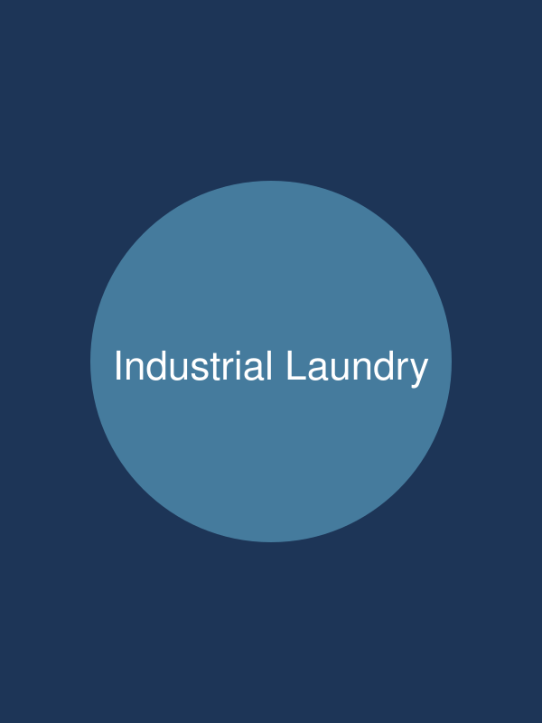
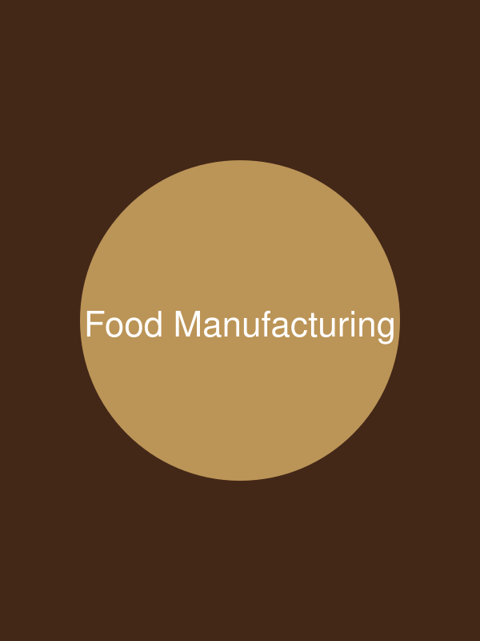
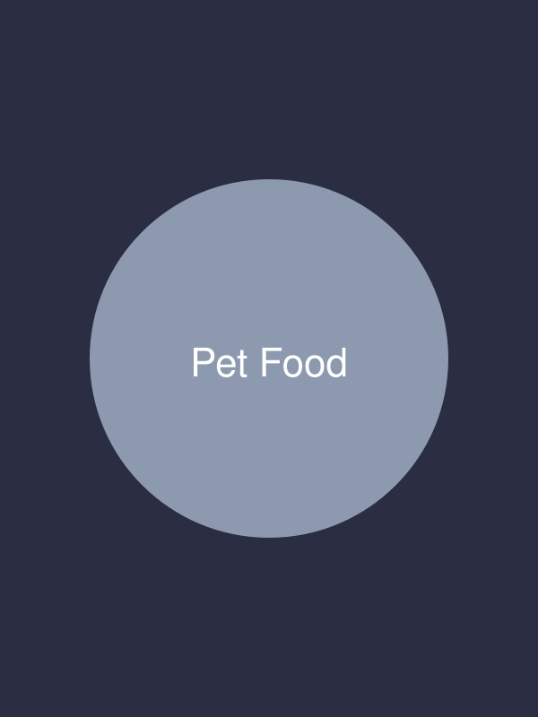
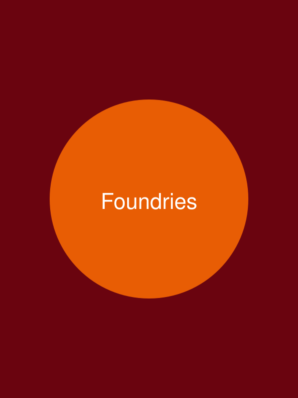
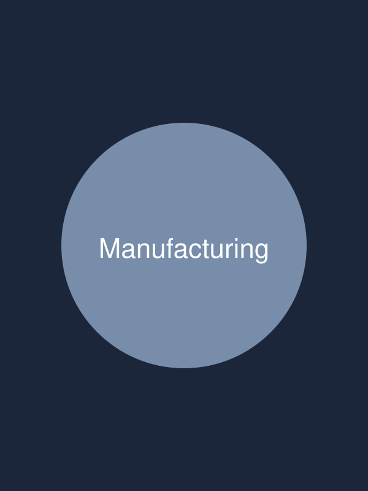
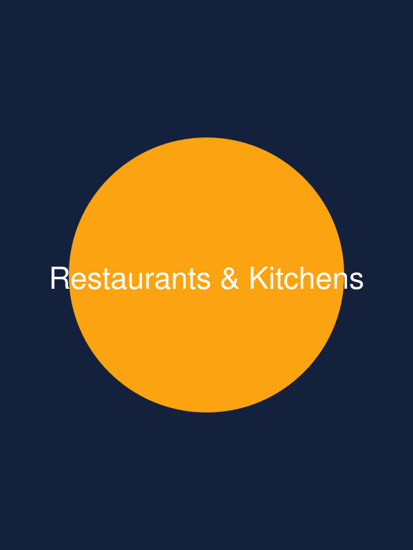

Heat from industrial laundry, back into the process
Exhaust recovered into makeup air, process water or boiler feedwater, through equipment built for what that airstream actually carries.
Discover Industrial LaundryScroll down. The panel should pin for one screen and the industries should step past it — names on the left lighting up in turn, the picture settling in as it changes, the words on the right swapping under it. Clicking a name should land on that industry rather than on its edge.
Current focus industries






Exhaust recovered into makeup air, process water or boiler feedwater, through equipment built for what that airstream actually carries.
Discover Industrial Laundry01 / 06
Exhaust recovered into makeup air, process water or boiler feedwater, through equipment built for what that airstream actually carries.
Discover Industrial LaundryExhaust recovered into makeup air, process water or boiler feedwater, through equipment built for what that airstream actually carries.
Discover Food ManufacturingExhaust recovered into makeup air, process water or boiler feedwater, through equipment built for what that airstream actually carries.
Discover Pet FoodExhaust recovered into makeup air, process water or boiler feedwater, through equipment built for what that airstream actually carries.
Discover FoundriesExhaust recovered into makeup air, process water or boiler feedwater, through equipment built for what that airstream actually carries.
Discover ManufacturingExhaust recovered into makeup air, process water or boiler feedwater, through equipment built for what that airstream actually carries.
Discover Restaurants & KitchensPast it. The panel should have released.